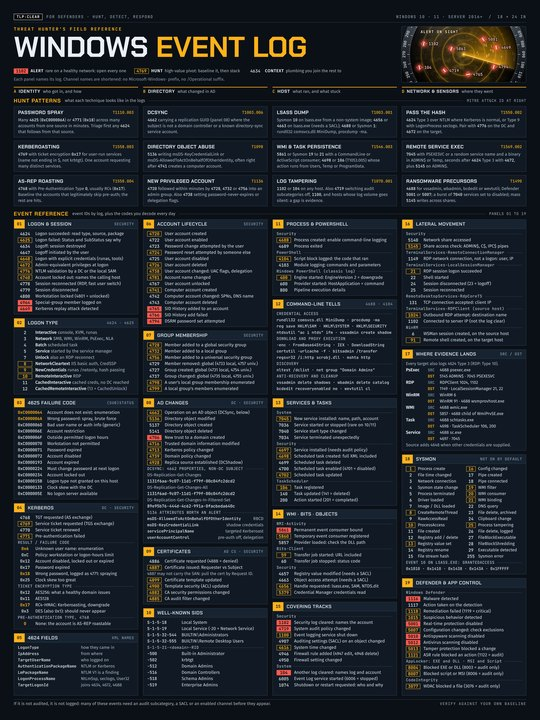
Preview + filesPick a theme
Same content on every sheet. Select a preview for the full-size files.

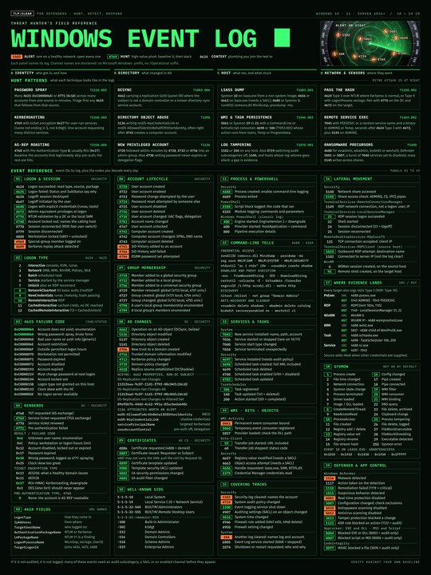
Preview + files
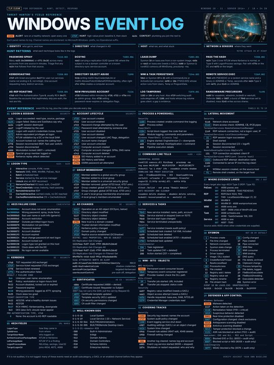
Preview + files
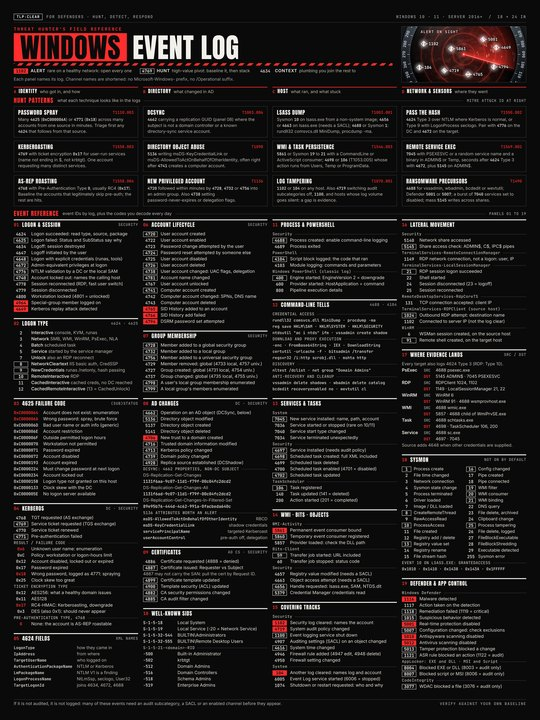
Preview + files
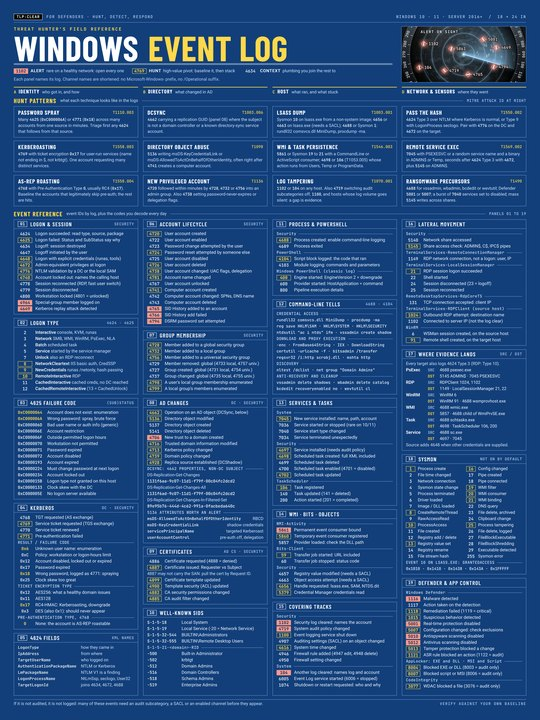
Preview + files
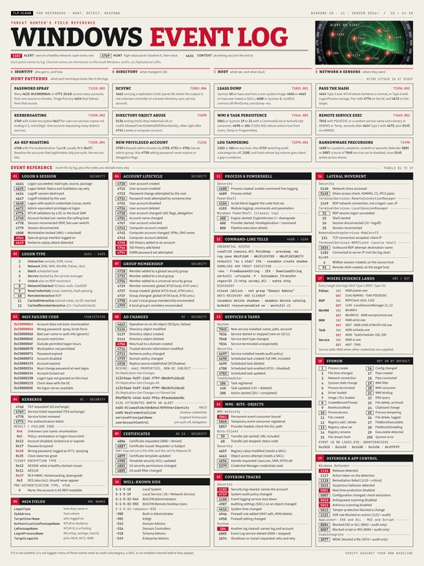
Preview + files
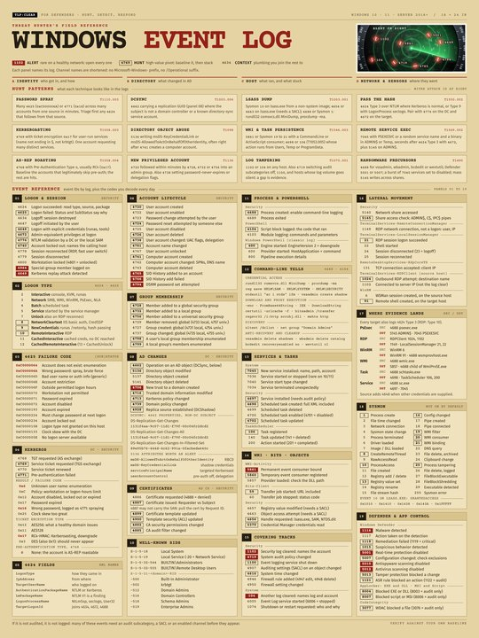
Preview + files
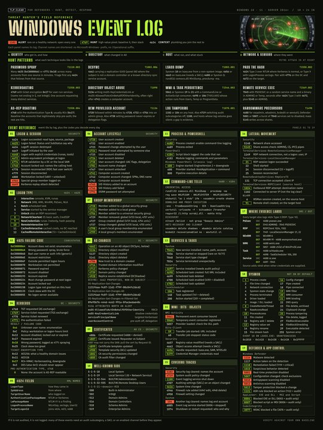
Preview + files
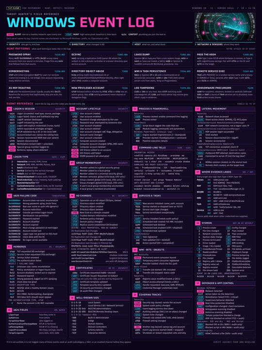
Preview + files
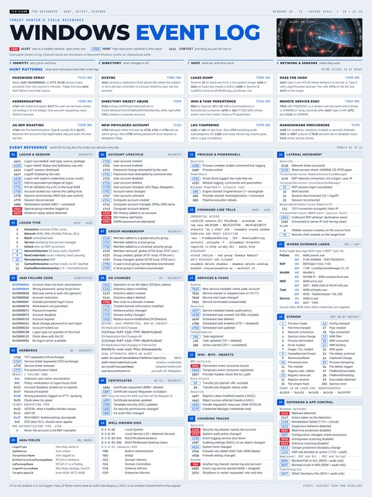
Preview + files
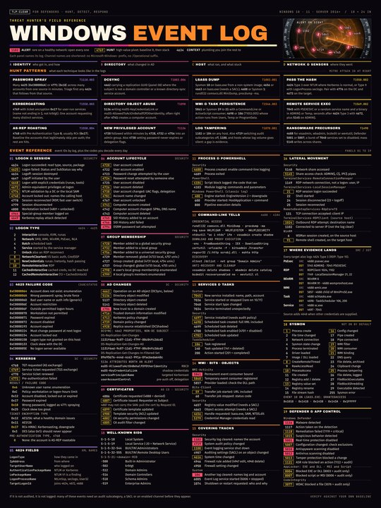
Preview + files
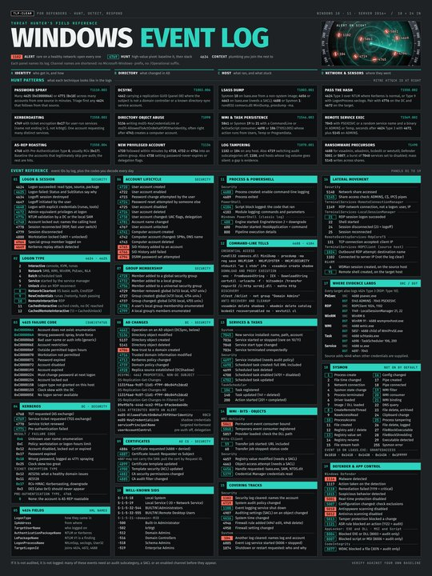
Preview + filesEach button under a preview opens that print file at full size in a new tab. Right-click it to save, or use the download buttons in the preview.
Printing
Every file is a lossless PNG drawn at 300 dpi, in sRGB.
| Order this size | Use this file | Pixels | What comes out |
|---|---|---|---|
| 18 × 24 in | 18x24 | 5400 × 7200 | The poster edge to edge, as designed. For any print shop that lists 18 × 24. |
| 20 × 24 in | 20x24 | 6000 × 7200 | The poster at exactly its 18 × 24 size, with 1 in of matching background on the left and right. Trim the sides to fit an 18 × 24 frame. |
| 20 × 30 in | 20x30 | 6000 × 9000 | The poster 11% larger (20 × 26.7 in), with a 1.7 in band of matching background above and below. |
| 24 × 36 in | 20x30 | 6000 × 9000 | The same file, one third larger than the original (24 × 32 in) with 2 in bands. Prints at 250 dpi. |
- Walgreens and Sam's Club. As of November 2026 neither lists 18 × 24 among its poster sizes. Both list 20 × 30 and 24 × 36, and Sam's Club also lists 20 × 24, so use a store-size file there. Uploading the 18 × 24 file to another size would crop it.
- Before you pay, check that the store's preview shows the whole sheet, from the top strip to the footer line, with nothing cut off.
- Paper. Matte hides glare on the dark themes. Field Manual, Case File and Arctic have light backgrounds and use far less ink.
- Type size. At 18 × 24 the event rows print at 10.5 pt and the smallest labels at 9 pt. At 24 × 36 that becomes 14 pt and 12 pt.
What's on the sheet
Four columns that follow an intrusion, under a row of twelve hunt patterns.
AIDENTITYwho got in, and how
- 01Logon & session
- 02Logon type
- 034625 failure code
- 04Kerberos
- 054624 fields
BDIRECTORYwhat changed in AD
- 06Account lifecycle
- 07Group membership
- 08AD changes
- 09Certificates
- 10Well-known SIDs
CHOSTwhat ran, and what stuck
- 11Process & PowerShell
- 12Command-line tells
- 13Services & tasks
- 14WMI · BITS · objects
- 15Covering tracks
DNETWORK & SENSORSwhere they went
- 16Lateral movement
- 17Where evidence lands
- 18Sysmon
- 19Defender & app control
- Password spray
- DCSync
- LSASS dump
- Pass the hash
- Kerberoasting
- Directory object abuse
- WMI & task persistence
- Remote service exec
- AS-REP roasting
- New privileged account
- Log tampering
- Ransomware precursors
1102ALERTrare on a healthy network: open every one
4769HUNThigh-value pivot: baseline it, then stack
4634CONTEXTplumbing you join the rest to